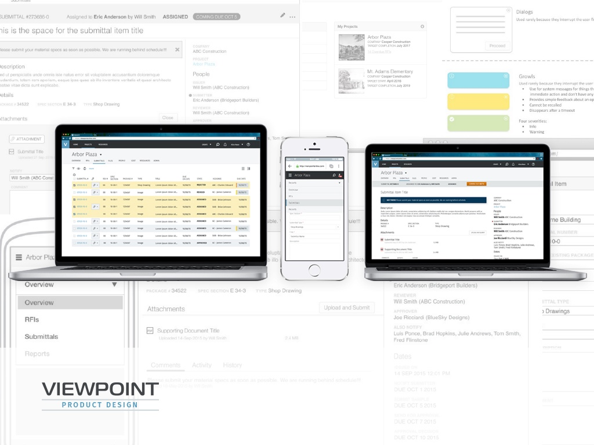
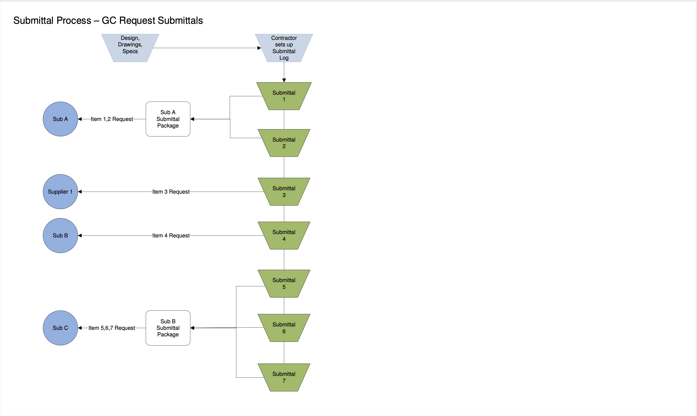
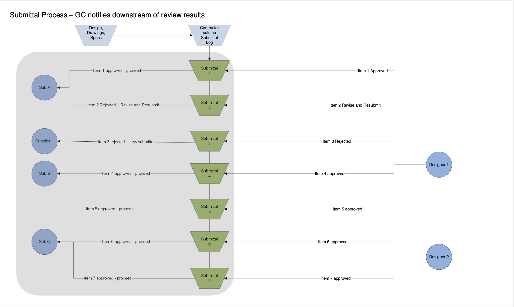
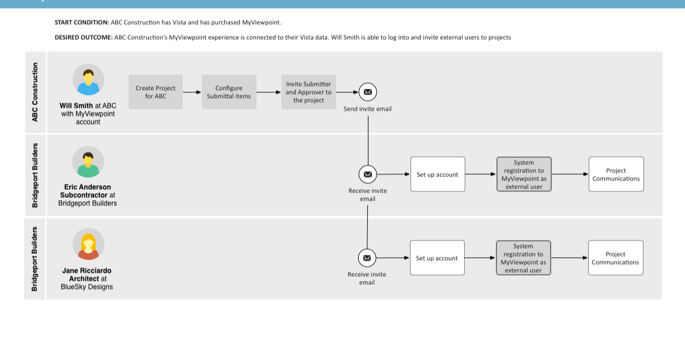
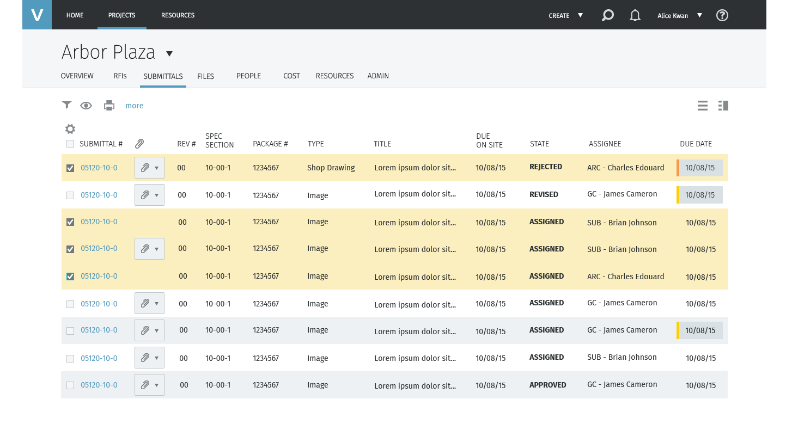

Viewpoint · 2018
Viewpoint Online — Submittals UX
On a construction project, every product, drawing and sample has to be approved before it's bought or installed. General contractors ran that chain on spreadsheets, email and phone calls with subcontractors and architects who didn't share their software. I designed submittals for Viewpoint Online: one shared log, one status model and one detail page that a contractor, a subcontractor and an architect can all work from, on desktop and in the field.
Client
Viewpoint
Timeline
2018
Role
Senior UX Designer
Team
Product manager, Viewpoint Online engineers, visual design
Product area
Viewpoint Online (MyViewpoint) · Project collaboration
Focus
Enterprise · Product UX · Responsive web

In one line
Viewpoint's contractors already ran their business on Vista, Viewpoint's ERP. Their subcontractors and architects didn't, so submittals lived in a spreadsheet and an inbox. I designed the submittals workflow for Viewpoint Online: a model of how an item moves between three companies, a log that works like the spreadsheet it replaces, and a detail page that tells every role what's needed from them and by when.
Context and the problem
A submittal is how a construction team proves it's building what was designed. The general contractor (GC) reads the spec book, lists every item that needs product data, shop drawings or samples, and asks the right subcontractor or supplier for each one. The GC checks what comes back and sends it to the architect, who approves it, approves it with conditions or rejects it. Only then can the sub order the material.


Every hand-off in those two diagrams was an email or a phone call, and the log was a spreadsheet only the GC could see. A lost revision or a missed date means material arrives late or the wrong product gets installed, and both cost real money.
For Viewpoint, the goal was to bring those outside partners into Viewpoint Online so a Vista customer's project could run in one place. The constraints:
- Vista data. Projects and submittal items start in Vista. The web experience had to stay connected to it, not become a second system to keep in sync.
- Users we didn't sell to. Subs and architects arrive by email invitation, use the product a few times per project, and have no training. The activity model called this out plainly: not familiar with the system, learning curve.
- Volume. Hundreds to thousands of items per project, tracked over months.
- The field. Superintendents and subs check status on a phone on site, so every screen had to work at phone width.
- Scope. The feature shipped in milestones, so the model had to hold together even when parts of it weren't built yet.
My role and what I owned
I was the UX designer on submittals, from the process research to the high-fidelity screens.
- I owned the process diagrams, the activity model and personas, the item state model, the information architecture and role permissions, the story map facilitation, the wireframes for the log, detail page, activity history and phone layouts, and the high-fidelity screens.
- Product management owned requirements and milestone scope, and worked the story map with me.
- Engineering owned the Vista integration and the workflow behind the states. Visual design set the Viewpoint Online look the high-fidelity screens are built on.
The figures are my working diagrams, wireframes and final screens. People, companies and projects in them are placeholder data.
Goals, and how we'd know
We agreed on what success looked like before drawing screens:
- The GC can replace the spreadsheet. Set up, filter and scan a log of hundreds of items as fast as in Excel, and act on many at once.
- An outside user can finish their task cold. A sub opens an invitation, sees what's asked and uploads it without help. An architect reviews and decides the same way.
- Anyone can answer where is it? State, owner, next due date and what changed are visible without opening anything else.
- Revisions never get lost. A rejected item comes back as a new revision of the same item, with its history intact.
What we learned in research
I mapped the process with Viewpoint's domain experts and customers, then built an activity model: every task each role does, in order, with the questions and worries around it. Three findings changed the design.
![Submittals activity model in five numbered stages. 1, the GC creates a list of items from the spec book, adds details, sets due dates, creates a numbering system, groups items by trade and determines who signs off, surrounded by notes: 100s to 1000s of them, needs to be like Excel, tedious work, needs to be fast and easy, extended periods, need to report up, where are things at. 2, the subcontractor gathers artifacts and returns them, noted not familiar with the system and time sensitive. 3, the GC reviews for completeness or sends it back, noted need way to reissue without revision number. 4, the architect reviews, signs off or returns, noted could approve with conditions. 5, the GC notifies the sub, requests revisions and marks it complete, noted stressed about cost, what did I miss, is this a valid rejection](../assets/img/case/viewpoint-submittals/activity-model.png)
1. It's a log before it's a workflow
The GC's first job is building the list: 100s to 1000s of them, tedious work, and, word for word, needs to be like Excel. A card or inbox view would have looked friendlier and slowed down the person who spends the most time in it. So the log stayed a dense table, with column choices, bulk selection and packages (Decision 2).
2. The real question is where is it?
The same worries came up at every stage: where are things at, what is going on, need to report up, and at the end what did I miss? So status went on top of every item: one state, the person who has it and the next due date, in a bar that looks the same in the log, on the detail page and on a phone.
3. Rejection isn't the end of an item
Items bounce. The architect can approve with conditions, the GC can send an incomplete package back, and people asked for a way to reissue without a new revision number and whether a rejection was valid. So rejection became a loop with a count: the item is reissued, its revision number goes up and the reason stays attached (Decision 1).
Strategy and the decisions that mattered
Decision 1: Model the item before designing the screens
Three companies touch every item, and each can move it. Before any layout, I drew one state model with the three roles across the top and every transition labelled. Two choices in it shaped the product:
- Reissue, don't recreate. A rejected or incomplete item goes to Reissued and gets a higher revision number. It stays the same item with the same history, instead of a new row that breaks the link to what was rejected.
- Close from anywhere. Specs change mid-project. The GC can close an item from any state, so dead items stop cluttering the log without being deleted.

Decision 2: Keep the spreadsheet, add what spreadsheets can't do
There was a pull toward a simpler, card-based list that would feel more modern and be easier for occasional users. I argued the log belongs to the GC, who lives in it all day, while subs and architects mostly arrive at a single item from an email. Designing the log for the occasional user would have slowed the main one and helped nobody.
So the log is a table with a submittal number, revision, spec section, package, type, state, assignee and dates. On top of that sit the things a spreadsheet can't do: a column chooser grouped into fields, roles and dates, attachments one click from the row, bulk Assign and Add to a package, and a colour on the due date when an item is running late.

Decision 3: One detail page for every role
The alternative was a separate screen for each role. That would have meant three designs to keep in sync and three different mental models of the same item. Instead there's one page, and the role changes only the primary action: the GC gets Assign, the sub gets Upload and Submit, the architect gets the decision.
![Board titled Submittals User personas with three rows: reviewer (the GC), submitter (the subcontractor) and approver (the architect). Each has a common box, where they sign in and go to account settings, projects, submittals, help and home, and a submittals box. The GC can invite external users, create projects, create and edit submittals, upload, submit, review and notify participants, and manage project settings and users. The submitter can upload, submit and notify the reviewer. The approver can upload, review and notify the reviewer](../assets/img/case/viewpoint-submittals/persona-do-go.png)

Decision 4: Scope by story map, not by screen
We laid out every task from the activity model as a story map, then drew release lines across it. The first milestones covered the full loop (issue, submit, review, decide) for single items. Packages, reporting and the full schedule of dates came in later slices. That meant a sub could complete a real submittal from the first release, even if the GC's power tools were still coming.

Design process and solution
The detail page
The page is built to answer three questions from the top down: what state is this in, what's asked of me, and what do I need to do it.
![Wireframe of a submittal detail page in the submitter's view. A grey status bar reads Submittal number, assigned to Eric Anderson by Will Smith, Assigned, and a Coming due Oct 5 pill, with edit and more icons. Below the title, a dismissable message from the GC: please submit your material specs as soon as possible. The main column has description, details (package, spec section, type), attachments with an Upload and Submit button, and comments, activity and history tabs. The right rail lists company, project, people (issuer, submitter, reviewer, approver, also notify) and seven dates](../assets/img/case/viewpoint-submittals/wire-detail.png)
Activity history
Items live for months and change hands many times. The history groups every event by day, puts decisions in bold (issued, submitted, sent for review, approved) and keeps routine events like logins and downloads small. The note that came with a decision stays next to it, so is this a valid rejection? has an answer on the page.
![Wireframe titled VO Activity history UX UI in page, Submittals. A rejected submittal, revision 1, with a Past due Oct 5 pill and the architect's rejection message at the top. The page dims except for the activity section, which has History and Comments toggles, a Hide full history link, a descending sort and a timeline grouped by day: Sept 26 issued, Sept 28 submitted, Oct 2 sent for review, Oct 6 approved, each with the comment that came with it and smaller login, download and print events around it](../assets/img/case/viewpoint-submittals/wire-activity.png)
High fidelity



Validation and iteration
I reviewed the wireframes with Viewpoint's construction experts and walked each role's scenario from the activity model through them: a GC issuing a package, a sub responding from an invite, an architect rejecting an item and the GC reissuing it. The biggest change came from taking the detail page to a phone.
We thought the phone could show everything. On site it had to show less.
We thought the phone layout could stack the desktop page as it was: status, description, attachments, activity, then people and dates. We learned that on a phone, in the field, people check two things, the state and what's asked of them, and the long people and dates lists pushed attachments and activity far down the page. So we cut descriptions to two lines with a more link, and collapsed People and Dates by default. That gave the space back to the state and the ask, and made the page lighter to load on a site connection.
![Detail page wireframe on desktop next to the same page on a phone. The phone stacks the status block, title, the GC's message, description, details, attachments with Upload and Submit, activity, then people and dates. Four callouts: limit descriptions on phone to two lines with a more option to save space; limit descriptions on phone to two lines with a more; have this section closed by default to gain real state space and improve performance, next to People; have this section closed by default, next to Dates](../assets/img/case/viewpoint-submittals/wire-responsive.png)
Outcome and impact
Submittals shipped in Viewpoint Online in milestones, following the release lines on the story map. The GC, the sub and the architect work from the same item in the same product, and Vista stays the source of the project data.
- One place for the chain. Requests, uploads, reviews and decisions that used to be emails and calls are events on the item, with a history anyone on the project can read.
- Outside partners without a sale. Subs and architects join by invitation, which gave Viewpoint's customers a reason to bring their whole project team into the product.
- A pattern for the rest of the project. The log, status bar, people and dates rail and activity history were designed as general patterns. RFIs sit next to submittals in the same project tabs, with the same item-with-a-state shape.
The approval is a moment. The waiting around it is what costs money, so the design is mostly about making the waiting visible.
What I'd do differently
- Measure from day one. Our goals were clear, but we didn't set up tracking for them: time from issued to approved, how often items are reissued, how many outside users finish their first task. Those numbers would have shown whether the product sped submittals up or just moved them online.
- Test with outside users sooner. Subs and architects were the least familiar users and the hardest to recruit. I'd put the invite-to-upload flow in front of real subcontractors before high fidelity, because that's where the product either earns their participation or loses it.
- Design the phone first for field roles. The phone layout came from adapting the desktop page, and our biggest change came from that step. For the sub and the superintendent, I'd start at phone width and scale up.
The broader lesson: in a multi-company workflow, the hardest users to design for are the ones who didn't choose the software. Everything here, from the email-first detail page to the short Do and Go lists, came from designing for the person who shows up once, cold, with a deadline.